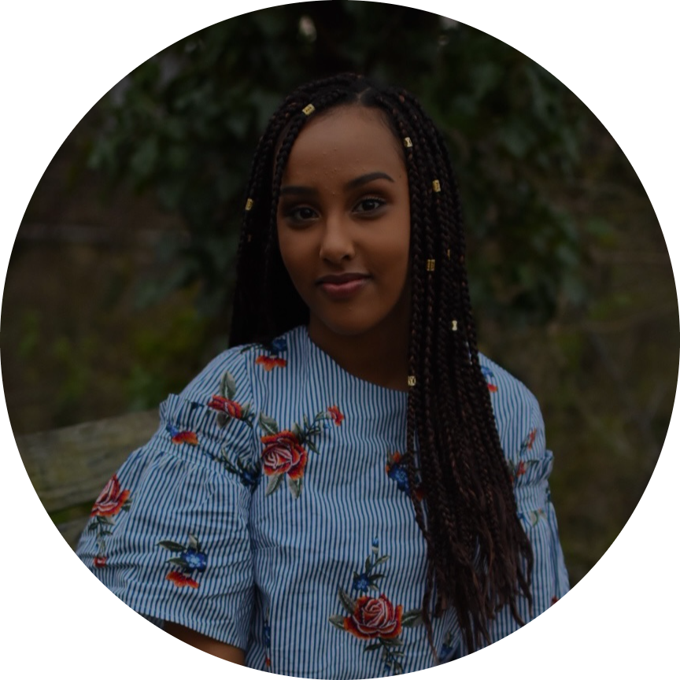

|  |
Arsema Tegegne
Student at the Universtity of Maryland College Park |
I am in my second year, studying Computer Science with a minor in Spanish.
Relevant Coresework: Object Oriented Programming I, Object Oriented Programming II, Business Statistics, Intensive Intermediate Spanish, Reading and Writing in Spanish, Business Value Chain, Macroeconomics, Microeconomics
Skills and Languages
Java, Python, CSS, JavaScript, HTML
Projects
- Tech + Research: Metrics for Translation
- Worked with a team to investigating methods to helps users asses the quality of machine translated outputs
- Collected acceptability judgements and user confidence data through annotating 200 translations and back translations of Russian and French, to English
- Evaluated translated output against input using quantitive translation accuracy tools; Comet-Src and length-based heuristics
- Compiled visualizations to aid in the identification of accuracy thresholds for Russian and French
- Delivered final findings in booth-style presentation at UMD’s Annual Hackathon
- Summer Guild-Breakthrough Tech: StuddyBuddy
- Selected to participate in 5-day programming workshop
- Worked in group of 3, alongside software engineer mentor in brainstorming ideas for app-prototype targeted towards building stronger social ties at UMD
- Using Thunkable, built app-prototype “StuddyBuddy”, an app that enables users to connect with others at UMD by setting up study dates, sharing class material, and organizing group study sessions
Work Experience
| Servpro, Marketing Intern |
July 2022 - Present |
- Create 5, 10-second reels per week targeting towards homeowners in the Rockville-Olney area
- Display advertisements on social media accounts with a following of over 3k
|
| Acorn Health, Registered Behavior Technician |
May 2022 - October 2022 |
- Managed a caseload of 3 children with autism spectrum disorder
- Implemented behavior training program through completing over 45 goal-tasks per session
- Compared data using monthly-progress graphs and objective daily behavioral summaries
|